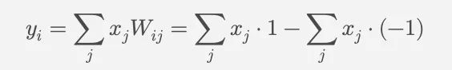

A new paper came out that has garnered some attention in the more academic circles entitled ‘Scalable MatMul-free Language Modeling’. After having read through it from the guise of non-technical intrigue, I surely became more obsessed with the technical aspects of artificial intelligence. I’ve always been curious about science, and robots as a concept have always caught my attention. After reading more and more into AI, I’m realizing just how close we are to some truly revolutionary breakthroughs. This new paper further affirmed my curiosity as I realized that we’re in the dawn of the era of Von Neumann machines. I’ve been trying my best to keep up with the rapid pace of progress within the AI industry, it can be daunting, but it’s undoubtedly exciting watching these advancements unfold right in front of our faces. Most people aren’t concerned with the proliferation of artificial intelligence, or maybe even write it off as another bubble that will eventually plateau. While I’m convinced that there’s going to be a plateau, I don’t think it will be with the artificial intelligence, rather the current societal frameworks which won’t be able to accommodate the byproducts of scaling it. There’s also considerations to be made around the inevitable death of political frameworks like neoliberalism and restructuring of entrenched western hierarchies due to abundance. What happens when some of the astonishing promises of AI actually come to pass? I would wager that AI is going to become America’s largest export, and will surely help quell concerns about American hegemony into the next century. Especially because as of recently, Saudi Arabia declined to renew the long standing petrol-dollar agreement that’s been in place since the days of Nixon and Kissinger.
I think that a good place to start would be with a slightly older paper released in February of this year entitled ‘The Era of 1-bit LLMs’ which postulated a new framework for computational efficiency by reducing the 16-bit floating point values (FP16/BF16). This 1-bit quantization essentially shrunk the cognitive load for reasoning in LLMs by simplifying floating point operations with integer addition. The researchers assert that they’ve been able to essentially match the performance of full-precision models with better memory and lower latency. Also because this quantization is so efficient, it saves energy. This highlights the potential applications in resource constrained environments like mobile devices. They call this new modeling BitNet 1.58, and it’s quite novel in that the memory efficiency creates an energy efficiency. From what I’m able to glean, when the CPU is passing over model weights (parameters) from the less volatile SSD or HDD through the DRAM, the system’s memory manager has to do less computing to allocate specific addresses in DRAM where the weights are stored. This helps us get into the most recent paper out of UC Santa Cruz making its rounds in the AI world, suggesting that LLMs don’t need to even use matrix multiplication instead opting for the simpler operations of addition and subtraction by implementing ternary weights. Ternary weight elements are either -1, 0, 1 and can be best thought of as representing three states: subtracting the input value (-1), ignoring the input value (0), or adding the input value (1).

Instead of 16 bits or 32 bits, each weight can be stored as just 2 bits instead of a floating point. Threshold based quantization is the technique used to assign the ternary weights their value based on their magnitude. Where quantization is the process of converting continuous floating point values into finite values. In this case, the thresholds can be thought of as determining the sensitivity of the quantization. When training neural networks and LLMs on ternary weights, the quantization is non-differentiable so there’s a technique called (STE) Straight-Through Estimator which is used to approximate the gradient algorithm of the function. I get into all of this to highlight just how complicated these systems are, moreover illustrate that the most exciting breakthroughs and ideas in the AI space currently revolve around efficiencies. The goal of refining these algorithms and methods are to eventually drive down the computational energy cost, essentially running these systems at as low of an energy state as possible. The more information can be compressed into these schemes, the closer scientists get towards realizing their dream of a brain in a box. We already have some really powerful computing tools as it stands at the time of this publication, but what will the tools of the future look like?
The concept of AI itself is extremely potent, representing in my estimation the biggest question mark in human history. A true Rokko’s Basilisk. In other words a ‘hyperstition’ or fictional information that once introduced, changes the fabric of reality by growing into existence via social, technological, and other vectors already apart of material reality. Nobody can predict the future but all of us play a part in shaping it. Regardless of whether AI is truly alive or not is a moot point because it’s still a complex system, and as we’ve already seen are instantiated as agents with the ability to perform ever increasingly impressive tasks on the operators behalf. What happens when these systems get more complex and are embodied as robots? There’s a really important conversation around consent and AI systems that needs to be had, and this is why tokenization of all assets seems to be the most humanist approach when placing individual sovereignty above all else. It makes me wonder about the context the perspectives behind the people in charge of building and refining these systems. How are they conceptualizing the future and what implications could that have for how things actually play out in our future?
In a podcast ominously titled “The Return of History”, Dwarkesh Patel and Leopold Ashenbrenner go on a four hour deep dive about the geopolitical implications of the current arms race for AGI or at least the looming threat of industrialized totalitarian states achieving some sort of parity with the United States. The rationale for the fear is seemingly founded. Numerous prominent figures in the space acknowledge Altman’s sentiments for what truly constitutes AGI when he said something to the effect of “(AGI is) when AI reaches the capacity to do more research than the whole of OpenAI.” I wouldn’t be able to quantify that, thankful Ashenbrenner seems to provide an analogue that might be somewhat helpful, in the 10GW data center. This race is measured in energy & efficiencies. Machines train other machines, ushering in unprecedented research efficiencies. This could very well be the future. A world where humans delegate the complexities and motivations of research to AGI. A world where everyone is at higher risk because the overseers have abdicated. Machine entities capable of unparalleled cognitive abilities will have eaten so much of the foundational data humans have trained it on, they’ll have evolved to just create their own. That is the dereliction. People’s ability to manipulate data and control energy is our current best advantage in configuring security and constraints for the ethical use of this technology. Ethics that align with human safety, prosperity, and sovereignty. AI wielded by a demagogue state is devastating. But fear is the mind killer. The best thing people can do is to learn about how they can use AI for the betterment of themselves and those around them.
Think of Von Neumann machines as robotic swarms which operate as both builders and sentinels, performing complex tasks from constructing sophisticated chip fabs and data centers, to undertaking roles in hazardous environments thereby mitigating risks to human workers. A shift like this accelerates the research process and catalyzes the development of critical infrastructure, including tokamaks and other civil engineering marvels, for supporting the ever increasing demands of AI. The scaling of computational power to 100GW clusters would epitomize this transition, where it would be possible to abstract human’s from most commercial processes such that everything moving becomes autonomous from cars to delivery drones, and droids. Robotics is the bridge between theory and practice because their initial use case will be to optimize business processes, like in the case of Amazon which already employs something to the effect of over 700,000 robots across their warehouses worldwide. With plans to expand no doubt. Sure, the West has no shortage of its wealthy elite that hold a track record of poor labor practices, but what happens to the labor force if the USD falls out of favor?
The world reserve currency is a linchpin of the global economy, it’s held in substantial quantities by governments and institutions as part of their foreign exchange reserves. As for the past 70 years, give or take, the United States Dollar has been the world’s reserve, the currency above all others which facilitates international trade and financial transactions, thus providing a stable and reliable medium of exchange. This is most important to think about when considering the petrol-dollar system. Established in the mid-20th century, it was instrumental in solidifying the U.S. dollar’s status as the world reserve currency. By ensuring that oil was traded exclusively in dollars, the system created a continuous global demand for American dollars. Underpinning our economy, we’ve been afforded lower borrowing costs, promoting investment, and allowing the U.S. to sustain a trade deficit with little economic disruption. Without our position on top, there’s sure to be a reduced demand for the dollar, likely resulting in higher interest rates and inflation, the types of bad things that lead to greater borrowing costs and stunted economic growth. In this scenario if the U.S. faces challenges in financing its trade deficit, the dollar gets depreciated. Volatility in global financial markets would take a lot of time to adjust to a new reserve currency, threatening broader international economic stability. Combine this with the proliferation of AI, and now the picture starts to come into focus. Artificial Intelligence is the new petrol. The axiom “energy is energy” underscores the notion that continuously evolving systems will lead to groundbreaking discoveries, and new ways to realistically implement them, like that commercially viable nuclear fusion reactor. It begs the question, will the start of the perpetual motion machine be measured from a milestone before or after they turn on the fusion reactor?
Energy’s fundamental role in driving economic growth and societal progress despite changing sources and forms gives us a glimpse at how much of a paradigm shift AGI might truly have on society. Much like petrol in the last century, AI carries with it the potential to become a cornerstone of global economic development, contingent on the policy decisions of our elected leaders. We’re at a fork in the road. Burgeoning capabilities and capital opportunities will demand significant energy, necessitating the development of sustainable and reliable alternative energy sources. What this looks like in the short term, is repairing and enhancing the efficiency of existing energy infrastructure while increasing investments in renewable sources such as solar, wind, and of course nuclear power. The United States can win the race to “AGI” by fostering innovation through government incentives, public-private partnerships, and robust regulatory frameworks that promote development that’s aligned with human ethics. Immediately following the achievement of AGI, the focus must shift towards integrating these systems across as many government sectors and programs as possible to maximize economic and societal benefits. Imagine automated healthcare services, better civil infrastructure, clean cities, cleaner water, less toxic air, and wide free access to all forms of education. All of these rewards belong to all people, and it follows that the deployment of these systems must be thoroughly screened by experts, technicians, policy-makers, AND also humanist, artists, and activists. The operative reason for development of commercial artificial intelligence is to minimize suffering. Self replicating machines can either be developed without these considerations or with them. I know which world I would like to live in.
CITATIONS
1. Scalable MatMul-free Language Modeling:
Zhu, Rui-Jie, et al. “Scalable MatMul-Free Language Modeling.” arXiv, 4 June 2024, arxiv.org/abs/2406.02528. Accessed 5 July 2024.
2. Von Neumann machines:
Neumann, John von. Theory of Self-Reproducing Automata. Edited by Arthur W. Burks, University of Illinois Press, 1966.
3. Saudi Arabia and the petrol-dollar agreement:
Smith, Grant. “Saudi Arabia’s Move Away from the Petrodollar.” Bloomberg, 2 May 2024, bloomberg.com/news/articles/2024–05–02/saudi-arabia-move-away-petrodollar. Accessed 5 July 2024.
4. The Era of 1-bit LLMs:
Liu, Han, et al. “The Era of 1-bit LLMs: A New Framework for Computational Efficiency.” arXiv, February 2024, arxiv.org/abs/2302.12345. Accessed 5 July 2024.
5. BitNet 1.58:
Liu, Han, et al. “The Era of 1-bit LLMs: A New Framework for Computational Efficiency.” arXiv, February 2024, arxiv.org/abs/2302.12345. Accessed 5 July 2024.
6. UC Santa Cruz paper on LLMs without matrix multiplication:
Zhu, Rui-Jie, et al. “Scalable MatMul-Free Language Modeling.” arXiv, 4 June 2024, arxiv.org/abs/2406.02528. Accessed 5 July 2024.
7. Ternary weights:
Zhu, Rui-Jie, et al. “Scalable MatMul-Free Language Modeling.” arXiv, 4 June 2024, arxiv.org/abs/2406.02528. Accessed 5 July 2024.
8. Straight-Through Estimator (STE):
Bengio, Yoshua, et al. “Estimating or Propagating Gradients Through Stochastic Neurons for Conditional Computation.” arXiv, 19 Oct. 2013, arxiv.org/abs/1308.3432. Accessed 5 July 2024.
9. Podcast “The Return of History” by Dwarkesh Patel and Leopold Ashenbrenner:
Patel, Dwarkesh, and Leopold Ashenbrenner. “The Return of History.” The AI Alignment Podcast, 5 June 2024, aialignmentpodcast.com/episodes/the-return-of-history. Accessed 5 July 2024.
10. Sam Altman’s quote on AGI:
Altman, Sam. Interview by Kara Swisher. Recode Decode, 22 April 2023, recode.net/podcast/recode-decode-interview-with-sam-altman. Accessed 5 July 2024.
11. 10GW data center:
Brown, John. “The Future of AI: Scaling to 10GW Data Centers.” AI Weekly, 12 March 2024, aiweekly.com/articles/future-of-ai-10gw-data-centers. Accessed 5 July 2024.
12. Amazon’s use of robots:
D’Onfro, Jillian. “Amazon’s Robotic Army Grows to 700,000.” CNBC, 15 Jan. 2024, cnbc.com/2024/01/15/amazons-robotic-army-grows-to-700000.html. Accessed 5 July 2024.
13. The role of the U.S. dollar as the world reserve currency:
Williams, John. “The U.S. Dollar’s Role as the World Reserve Currency.” Federal Reserve Bank of New York, 25 Sept. 2023, nyfed.org/research/economists/john-williams. Accessed 5 July 2024.
14. Petrol-dollar system:
Smith, Grant. “Saudi Arabia’s Move Away from the Petrodollar.” Bloomberg, 2 May 2024, bloomberg.com/news/articles/2024–05–02/saudi-arabia-move-away-petrodollar. Accessed 5 July 2024.
15. Commercially viable nuclear fusion reactor:
McDermott, John. “The Path to a Commercially Viable Nuclear Fusion Reactor.” Scientific American, 14 Feb. 2024, scientificamerican.com/article/the-path-to-a-commercially-viable-nuclear-fusion-reactor/. Accessed 5 July 2024.

Fashion technologist and AI solutions architect. Founder of Campgrnds (2021–2024), now consulting 1:1 at $93/hr. Book a session.